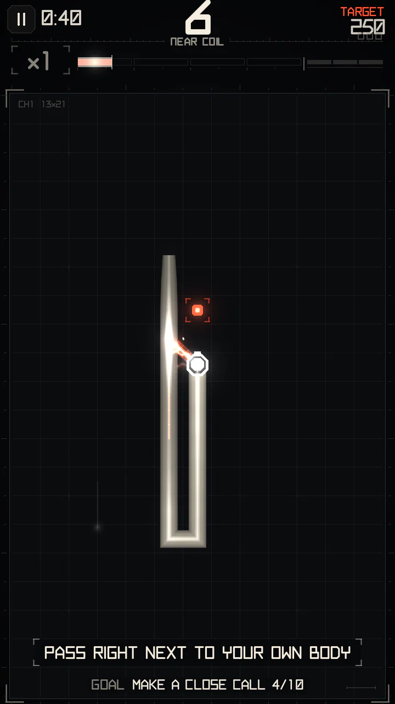
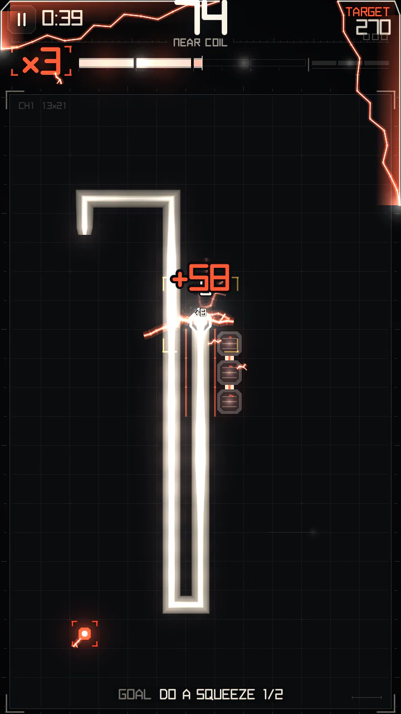
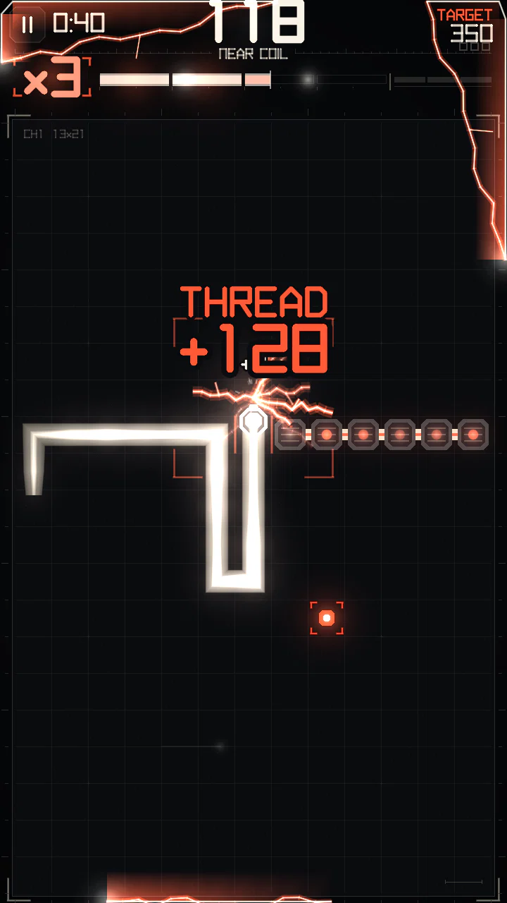
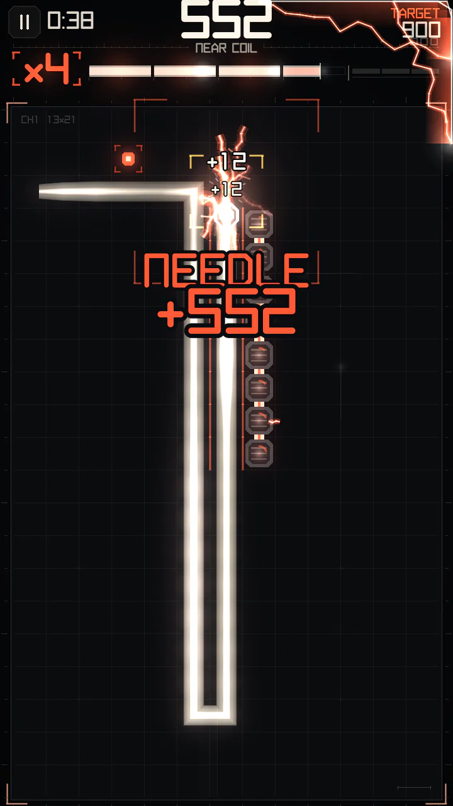
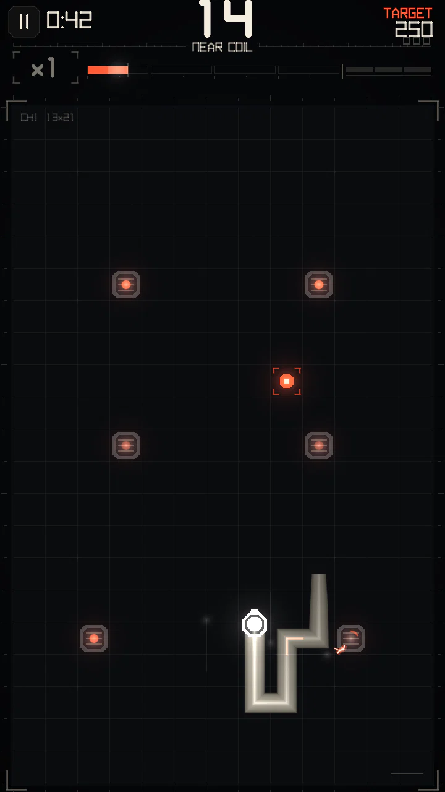

Close calls and maneuvers
Everything that charges the meter by being close: single close calls, skimming along your body, and the three maneuvers through gaps — SQUEEZE, THREAD and NEEDLE.
Close call (GRAZE)


After each step the game looks at the four cells around the head (up, down, left, right — not diagonals). Each one that holds a conductor is a close call:
- Your own body, but only its older part: the 5 cells right behind the head (the neck and a tight hairpin) don't count, and neither does the very tip of the tail that is about to move away. You have to actually run alongside your body.
- Structures: Campaign insulators, gate pylons, live relay posts and bridge bars, live wires. They kill on contact but are good for close calls.
Rules that keep it fair:
- Each body cell pays once. After that it shows a thin spark line inside (it is "charged") and never pays again.
- A cell of the board that just produced a close call can't produce another for 60 steps — this stops endless loops chasing your own tail.
- An insulator pays, goes dark, and lights up again after 40 steps (below).
What it is worth
| Kind | When | Charge | Points |
|---|---|---|---|
| Close call | the first after a pause | 30 | 2 per cell × multiplier |
| SKIM | another close call within 3 steps of the last one (riding along a lane) | 9 | 2 per cell × multiplier |
| Double | two or more cells at once in one step (say, body on both sides) | 45 | 2 per cell × multiplier |
This charge from close calls is "minor": the higher the multiplier, the less of it you keep — 100% at ×1, 45% at ×3, only 15% at ×5. Close calls alone top out around ×3; higher stages need maneuvers. Inside a hot zone every close call charges in full.
Tight steps and maneuvers
A tight step is a step where both side cells of the head (left and right of the direction of travel) hold a conductor: you are in a one-cell gap. Each tight step with a fresh side adds 12 charge, and the meter does not drain while you are inside a gap.
When the head leaves the gap, the run of tight steps is judged:
| Maneuver | Gap length | Condition | Points (× multiplier) | Charge |
|---|---|---|---|---|
| SQUEEZE | 2–5 steps | not a THREAD | 15 + 4 per step | 100 |
| THREAD | 1–4 steps | the gap separates the two sides: no way round shorter than 10 cells | 60 + 4 per step | 240 |
| NEEDLE | 6+ steps | a long corridor | 150 + 4 per step | 340 |
So a one-step gap is a THREAD only if it really goes through a wall of your body; a short gap with an easy way round is a SQUEEZE (two steps or more) or nothing (one step).






Fresh sides only
A gap only pays if at least one of its sides is fresh body, never used as a side of a gap before. Driving the same corridor again pays nothing. A gap made only of pylons is not a maneuver either — the gate pays for it.
Chains
A maneuver less than 30 steps after the previous one continues a chain (shown as CHAIN N). The chain multiplies both points and charge of the maneuver:
| Maneuver in the chain | 1st | 2nd | 3rd | 4th | 5th and on |
|---|---|---|---|---|---|
| Bonus | ×1 | ×1.25 | ×1.5 | ×1.75 | ×2 |
The chain breaks when 30 steps pass without a maneuver or the meter runs empty.
Example
A THREAD through a 1-cell gap at ×3, second in a chain: (60 + 4 × 1) × 1.25 = 80 base points, × 3 = 240 points, and 300 charge.
Crashing in a gap pays nothing for it: the run ends with THREAD or SQUEEZE failed.
Insulators


Campaign boards can have fixed blocks, insulators. Hitting one ends the run. Brushing one is a close call that is always paid in full (it is not your body, so hunger does not apply). After a close call the block goes dark and re-arms after 40 steps. Insulators also work as sides of a gap: a SQUEEZE between your body and a row of blocks counts.